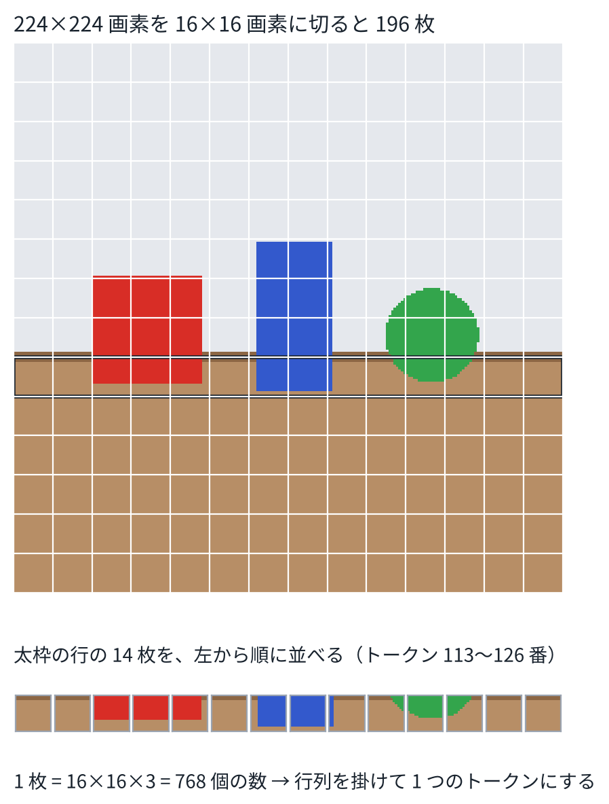

目次
1画像は数の並び
カラー画像は、縦 \(R\)、横 \(R\)、色 3 つ（赤、緑、青）の数の並びである。224 × 224 画素なら、\(224 \times 224 \times 3 = 150{,}528\) 個の数になる。
1 画素を 1 トークンにして Transformer に入れると、トークンは 50,176 個になり、注意の重みは 1 層・1 ヘッドで約 25 億個になる（5 章の \(n^2\)）。これでは重すぎる。そこで、画素をまとめてからトークンにする。
2パッチに切ってトークンにする
画像を、\(P \times P\) 画素の正方形（パッチ）に切る。パッチは \((R/P)^2\) 枚できる。1 枚のパッチの画素を 1 列に並べたベクトル \(x_i\)（長さ \(3P^2\)）に、行列 \(E\) を掛けてトークンにする[1]。
\[ z_i = E\, x_i + e^{\text{pos}}_i,\qquad i = 1, \dots, (R/P)^2 \]\(E\) は \(d \times 3P^2\) の行列で、学習で決まる。\(e^{\text{pos}}_i\) は、\(i\) 番目の位置を表すベクトルである（次の節）。これで、画像は \(d\) 次元のベクトルが \((R/P)^2\) 個並んだ列になる。4 章の文の埋め込みとまったく同じ形である。

パッチごとに同じ行列 \(E\) を掛けるのは、幅 \(P\)、ずらし幅 \(P\) の畳み込みと同じ計算である。実装でも、畳み込みの層 1 つで書くことが多い。
3位置の埋め込みとクラストークン
5 章で見たとおり、注意機構は順番を区別しない。パッチを並べ替えても、出力が同じように並べ替わるだけである。これでは、「ブロックがコップの左にある」ことがわからない。そこで、位置ごとのベクトル \(e^{\text{pos}}_i\) を足す。ViT では、これも学習する重みである。演習 6 の (4) では、位置の埋め込みを足すと、パッチの入れ替えが出力に表れるようになることを確かめる。
画像全体についての答え（たとえば分類）を出すために、列の先頭に、学習する特別なトークン（クラストークン）を 1 つ足すことがある。Transformer を通ったあとのクラストークンのベクトルが、画像全体の要約になる。クラストークンの代わりに、全部のトークンの平均を使うモデルもある。
4ViT の学習と、データの量
ViT は、画像とそのクラス（「犬」「車」など）の組で、2 章の交差エントロピーを使って学習する。ViT の論文の要点は、データの量にある[1]。
- それまで画像で主流だった畳み込みネット（CNN）は、「近い画素どうしが関係する」「同じ模様はどこに出ても同じ」という仮定を、ネットの形に組み込んでいる。小さな重みの組（カーネル）を、画像の上で滑らせて使う。
- ViT は、その仮定をほとんど持たない。パッチどうしの関係は、注意機構が全部データから学ぶ。
- そのため、ImageNet（約 130 万枚）だけで学習すると、同じくらいの大きさの CNN より数ポイント低い。ImageNet-21k（約 1400 万枚）や JFT-300M（約 3 億枚）で事前学習すると、CNN に並ぶか、上回った。
VLM の画像エンコーダには、この ViT を、7 章の方法で画像と文の組から学習したものを使うのが主流である。
5トークンの数は解像度で決まる
| 解像度 | パッチ | トークン | 注意の重み |
|---|---|---|---|
| 224 | 16 | 196 | 38,416 |
| 224 | 14 | 256 | 65,536 |
| 336 | 14 | 576 | 331,776 |
| 448 | 14 | 1,024 | 1,048,576 |
| 896 | 14 | 4,096 | 16,777,216 |
演習 6 の (3)。注意の重みは 1 層・1 ヘッドあたり。モデルの名前の「/16」「/14」は、パッチの大きさを表す（例：ViT-B/16）。
π0 の土台の PaliGemma は、224 × 224 画素の画像を 14 画素のパッチに切り、256 トークンにする（448 画素なら 1024、896 画素なら 4096）[2]。ロボットでカメラを 3 台使えば、画像だけで 768 トークンになる。
ロボットで使うときの注意。14 画素のパッチより小さい物（細いケーブル、小さなねじ）は、1 つのトークンの中に埋もれやすい。解像度を上げればトークンが増え、計算は 2 乗で重くなる。どのカメラを、どの解像度で入れるかは、精度と速さの取り引きである（12 章）。
6演習
演習 6画像をパッチに切ってトークンにする
python3 vla_math/ch06_patches.py出力の一部：
(1) パッチに切る
画像 224×224×3 → パッチ 196 枚、1 枚は 16×16×3 = 768 個の数
(2) 行列 E を掛けてトークンにする（ここでは E は乱数. 本物は学習で決める）
トークンの列の形 (196, 64)（196 個 × 64 次元）
パッチを並べ直した画像と元の画像の差の最大値 0.0e+00
(4) 位置の埋め込み
位置の埋め込みなし: 入れ替えた画像の出力 と 出力を入れ替えたもの の差の最大値 7.5e-15
位置の埋め込みあり: 入れ替えた画像の出力 と 出力を入れ替えたもの の差の最大値 2.1e-01
見るところ：パッチへの切り方は reshape と transpose だけで書ける。位置の埋め込みがないと、パッチをどう並べ替えても、注意機構の出力は同じように並べ替わるだけである。
変えてみる：P を 8 や 32 にして、パッチの見え方とトークンの数を比べる。
7まとめ
- ViT は、画像を \(P \times P\) のパッチに切り、行列を掛けてトークンにする。画像は、文と同じ「ベクトルの列」になる。
- 位置の埋め込みを足さないと、パッチの並びがわからない。
- ViT は仮定が少ないぶん、大量のデータで事前学習して強くなる。
- トークンの数は \((R/P)^2\) で、計算はその 2 乗で増える。解像度とカメラの台数は、速さに直結する。
8確かめる問題
- 336 × 336 画素の画像を 14 画素のパッチに切ると、トークンは何個か。1 枚のパッチのベクトルの長さはいくつか。
- パッチに同じ行列を掛けることが、畳み込みと同じ計算になるのはなぜか。
- 位置の埋め込みがないと、「ブロックがコップの左にある」と「右にある」を区別できないのはなぜか。
- ViT が、少ないデータでは CNN に負けるのはなぜか。
9読むもの
※参考文献
- A. Dosovitskiy et al., "An Image is Worth 16x16 Words: Transformers for Image Recognition at Scale," 2020. arXiv:2010.11929
- L. Beyer et al., "PaliGemma: A versatile 3B VLM for transfer," 2024. arXiv:2407.07726
- S. J. D. Prince, "Understanding Deep Learning," MIT Press, 2023. 本の全文が公開されている。https://udlbook.github.io/udlbook/